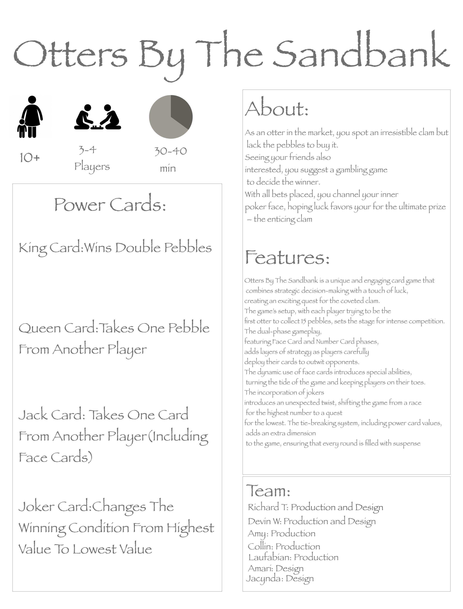
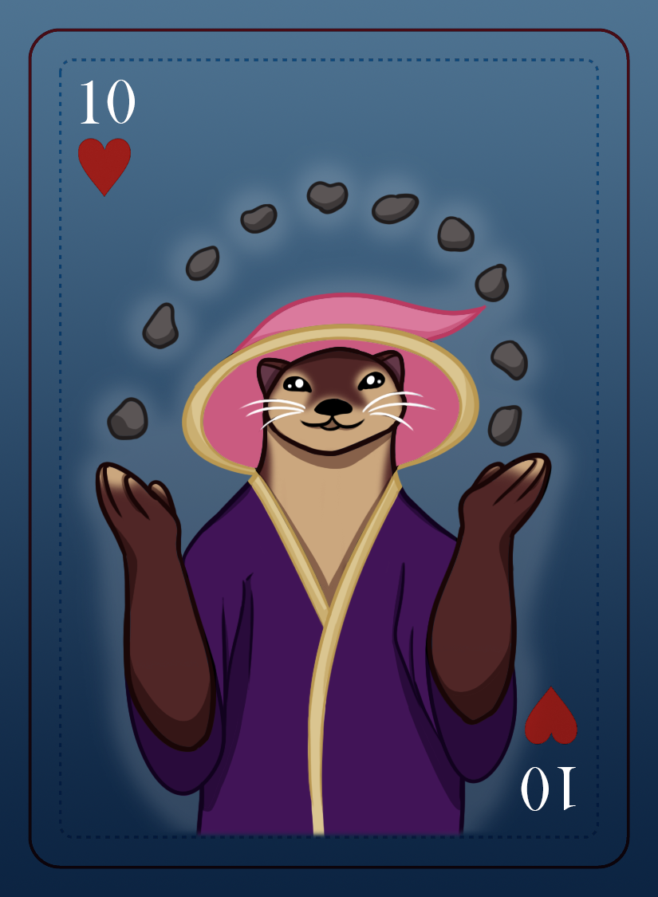

Hi, I'm Devin Wanda
Thank you for visiting my website! I am a student at Illinois State University. I’m currently a sophomore majoring in Creative Technology for Game Design, but I also enjoy working on web development for academic purposes and personal projects. I have always been interested in constructing websites and video games for as long as I can remember, and my goal is to pursue a career that involves designing or developing online projects. In the meantime, I’m working on expanding my knowledge and refining my current skills so I can provide the best product for users and consumers alike.
Some projects I have planned involve making a website that hosts a variety of games that I have been working on, developing an app on iPhones and Android, and working on ways that I can provide inclusion for people with disabilities to access the web.
I hope you enjoy this page and look through any of the projects that I have posted if you need to get in touch with me personally for questions or anything at all feel free to contact me with the information provided.
Game Design
 
At this moment I have not taken any classes to help educate me on video game design, but I have worked with unity and made a couple of flash games during my time in high school. I do want to pursue a full-time career in game design, and I also want to continue learning new skills that I can use for any future projects. I have always been interested in video games for as long as I can remember, and I always dreamed of making games that people can enjoy and talk about. So, I am very excited to be majoring in Game Design and acquiring the abilities I need to make these projects come to life.
In the meantime, I am currently working on physical games for classes at Illinois State University with a group of students where we design and publish board games and card games. I am still doing my best to learn and refine my skills so I can publish games on my website but at this moment I am not working on any personal projects because of work and school but I would eventually like to design and publish my own game on platforms like Steam.
Web Development


I have recently started developing websites in class at Illinois State University and it opened a whole new world of technology that piqued my interest. I started reading a lot of books and watching a lot of videos to improve my abilities at CSS and JavaScript to make better sites. I hope to eventually make a site where I can put my projects on and help promote myself as a game developer.
I still have a lot more to learn when it comes to web design and development, but I hope with my skills I can make something that helps showcase my abilities and offer a career path that I can pursue to make websites for businesses that can help me grow as a web developer.
Live Streaming

I have recently started live streaming and started doing podcasts with my friends. We occasionally talk about Chicago Sports or personal projects such as uploading videos and making professional short films. Since we just started, we are still figuring out a schedule that works but we usually upload 2 to 3 times a week.
We upload on Twitch, and we typically stick to consoles such as Xbox and PlayStation, but we will sometimes play PC games as well. On Twitch we play to enjoy ourselves and we rely heavily on communicating with viewers and telling stories. We want to provide an environment where people can just turn off their brains and have a good laugh while doing it.